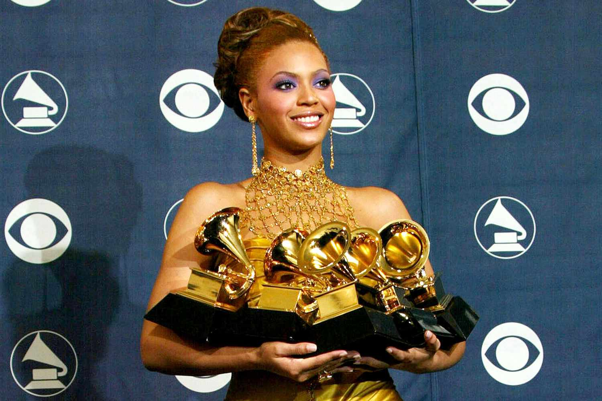
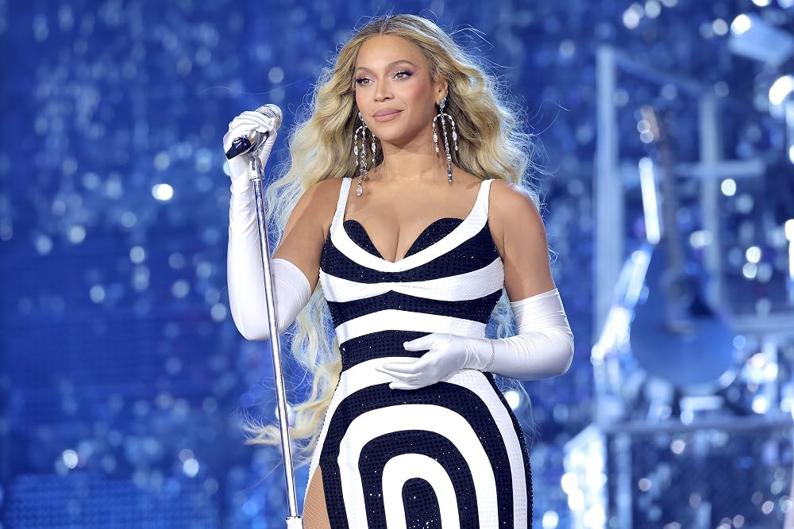

Beyoncé Giselle Knowles-Carter, a maior cantora do mundo.

Beyoncé Giselle Knowles-Carter, mais conhecida como Beyoncé, nasceu em 4 de setembro de 1981, em Houston, Texas. Ela é uma cantora, compositora, atriz e empresária americana. Beyoncé começou sua carreira musical no final dos anos 1990 como membro do grupo feminino Destiny's Child, que se tornou um dos grupos femininos mais vendidos de todos os tempos. Após o sucesso com o grupo, ela lançou sua carreira solo e se tornou uma das artistas mais influentes e bem-sucedidas da indústria da música.
Ela começou a se destacar com seu álbum de estreia solo, "Dangerously in Love" (2003), que rendeu a ela cinco prêmios Grammy. Ao longo de sua carreira, Beyoncé lançou vários álbuns de sucesso, incluindo "B'Day" (2006), "I Am... Sasha Fierce" (2008), "4" (2011), "Beyoncé" (2013) e "Lemonade" (2016). Ela é conhecida por sua poderosa voz, performances energéticas e videoclipes inovadores.
Em 2023, se tornou a primeira artista a receber o prêmio de "Artista do Ano" da Recording Academy, reconhecendo seu impacto duradouro na música e na cultura pop.
"A música é a minha vida. É a minha paixão. É a minha maneira de me expressar e de me conectar com o mundo."
Beyoncé
"I'm one of one, I'm number one, I'm the only one."
Beyoncé - Alien Superstar

Você pode encontrar mais informações sobre Beyoncé em seu site oficial clicando aqui.